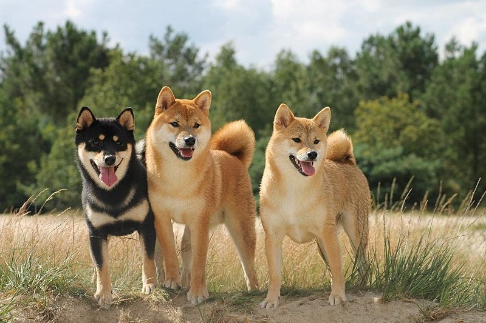

Shiba
The Shiba Inu is a breed of hunting dog from Japan. A small-to-medium
breed, it is the smallest of the six original and distinct spitz
breeds of dog native to Japan. A small, alert, and agile dog that
copes very well with mountainous terrain and hiking trails, the Shiba
Inu was originally bred for hunting.